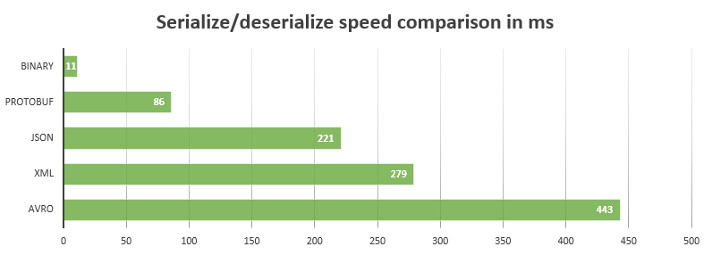

3.2. Protobuf
Protobuf (Protocols Buffer) là một language-neutral, platform-neutral của Google. Về cơ bản, nó được sử dụng để sinh ra mã nguồn với chức năng serialize và deserialize các cấu trúc dữ liệu (được định nghĩa trong file .proto) dưới dạng binary stream. So với dạng XML hoặc JSON thì dữ liệu đó nhỏ gọn gấp 3-10 lần và được xử lý rất nhanh.


Xem thêm: Benchmarking Protocol Buffers, JSON and XML in Go.
Bạn đọc có thể cài đặt và làm quen với các ví dụ Protobuf trên trang chủ trước khi đi vào nội dung chính.
3.2.1 Kết hợp Protobuf trong RPC
Đầu tiên chúng ta tạo file hello.proto chứa kiểu string được dùng cho HelloService ở phần trước.
hello.proto:
// có hai phiên bản hiện tại là proto2 và proto3
syntax = "proto3";
// tên package được sinh ra
package main;
// message là một đơn vị dữ liệu trong protobuf
message String {
// chuỗi string được truyền vào hàm RPC
string value = 1;
}
Để sinh ra mã nguồn Go từ file hello.proto ở trên, đầu tiên là cài đặt bộ biên dịch protoc qua liên kết ở đây, sau đó là cài đặt một plugin cho Go thông qua lệnh go get github.com/golang/protobuf/protoc-gen-go.
Chúng ta sẽ sinh ra mã nguồn Go bằng lệnh sau:
$ protoc --go_out=. hello.proto
// trong đó,
// protoc: chương trình sinh mã nguồn
// go_out: chỉ cho protoc tải plugin protoc-gen-go, (cũng có java_out, python_out,..)
// --go_out=.: sinh ra mã nguồn tại thư mục hiện tại
// hello.proto: file protobuf
Sẽ có một file hello.pb.go được sinh ra, trong đó cấu trúc String được định nghĩa như sau:
hello.pb.go:
type String struct {
Value string `protobuf:"bytes,1,opt,name=value" json:"value,omitempty"`
}
func (m *String) Reset() { *m = String{} }
func (m *String) String() string { return proto.CompactTextString(m) }
func (*String) ProtoMessage() {}
func (*String) Descriptor() ([]byte, []int) {
return fileDescriptor_hello_069698f99dd8f029, []int{0}
}
func (m *String) GetValue() string {
if m != nil {
return m.Value
}
return ""
}
Dựa trên kiểu String mới, chúng ta có thể hiện thực lại service HelloService, với sự kết hợp giữa Protobuf trong RPC.
hello.go:
// RPC struct
type HelloService struct{}
// định nghĩa hàm Hello RPC, với tham số là kiểu String vừa định nghĩa trong Protobuf
func (p *HelloService) Hello(request *String, reply *String) error {
// các hàm như .GetValue() đã được tạo ra trong file hello.pb.go
reply.Value = "Hello, " + request.GetValue()
// trả về nil khi thành công
return nil
}
Khi hiện thực một RPC service, chúng ta có thể chọn kiểu encoding mặc định hoặc định nghĩa lại với kiểu dữ liệu JSON như ở phần trước, và sau đó sẽ hiện thực lại plugin dựa trên mã nguồn protobuf.
Cập nhật hello.proto file như bên dưới để định nghĩa service RPC HelloService service thông qua protobuf.
hello.proto:
// định nghĩa service
service HelloService {
// định nghĩa lời gọi hàm RPC
rpc Hello (String) returns (String);
}
Nhưng khi sinh lại mã nguồn Go bằng lệnh protoc ở ví dụ đầu tiên, nội dung file hello.pb.proto cũng không thay đổi, đó là vì bộ biên dịch protoc sẽ không biết cách sinh ra mã nguồn RPC như thế nào.
Dùng plugin grpc đã được tích hợp bên trong protoc-gen-go để sinh ra mã nguồn gRPC cho HelloService.
$ protoc --go_out=plugins=grpc:. hello.proto
// Trong đó,
// --go_out=plugins=grpc: cho biết dùng plugin grpc
Trong mã nguồn được sinh ra, sẽ có một số kiểu mới là HelloServiceServer, HelloServiceClient, và hàm Hello, nên chúng ta sẽ không cần hiện thực lại.
3.2.2 Tùy chỉnh mã nguồn sinh ra plugin
Bộ biên dịch protoc của Protobuf được hiện thực để sinh ra những ngôn ngữ khác nhau dựa vào plugin. Ví dụ, nếu lệnh protoc có tham số là --xyz_out, thì protoc sẽ gọi plugin được xây dựng dựa trên ngôn ngữ xyz (vd: plugin protoc-gen-go).
Từ mã nguồn gRPC plugin, chúng ta có thể thấy rằng hàm generator.RegisterPlugin được dùng để đăng kí plugin đó. Interface của một plugin sẽ như sau:
type Plugin interface {
// Name() trả về tên của plugin.
Name() string
// Init() được gọi sau khi data structures built
// xong và trước khi quá trình sinh code bắt đầu.
Init(g *Generator)
// Generate() là hàm sinh ra mã nguồn vào file
Generate(file *FileDescriptor)
// Hàm này được gọi sau khi Generate().
GenerateImports(file *FileDescriptor)
}
Do đó, chúng ta có thể xây dựng một plugin mang tên netrpcPlugin để sinh ra mã nguồn cho thư viện RPC chuẩn của Go từ file Protobuf.
import (
// import gói thư viện để sinh ra plugin
"github.com/golang/protobuf/protoc-gen-go/generator"
)
// định nghĩa struct netrpcPlugin hiện thực interface Plugin
type netrpcPlugin struct{ *generator.Generator }
// định nghĩa Name() function
func (p *netrpcPlugin) Name() string { return "netrpc" }
// định nghĩa Init() function
func (p *netrpcPlugin) Init(g *generator.Generator) { p.Generator = g }
// định nghĩa GenerateImports()
func (p *netrpcPlugin) GenerateImports(file *generator.FileDescriptor) {
if len(file.Service) > 0 {
p.genImportCode(file)
}
}
// định nghĩa Generate()
func (p *netrpcPlugin) Generate(file *generator.FileDescriptor) {
for _, svc := range file.Service {
p.genServiceCode(svc)
}
}
Hiện tại, phương thức genImportCode và genServiceCode chỉ như sau:
func (p *netrpcPlugin) genImportCode(file *generator.FileDescriptor) {
p.P("// TODO: import code")
}
func (p *netrpcPlugin) genServiceCode(svc *descriptor.ServiceDescriptorProto) {
p.P("// TODO: service code, Name = " + svc.GetName())
}
Để sử dụng plugin, chúng ta cần phải đăng kí plugin đó với hàm generator.RegisterPlugin, chúng có thể được hiện thực nhờ vào hàm init().
func init() {
generator.RegisterPlugin(new(netrpcPlugin))
}
Bởi vì trong ngôn ngữ Go, package chỉ được import tĩnh, chúng ta không thể thêm plugin mới vào plugin đã có sẵn là protoc-gen-go. Chúng ta sẽ re-clone lại hàm main để build lại protoc-gen-go
package main
import (
"io/ioutil"
"os"
// import các package cần thiết
"github.com/golang/protobuf/proto"
"github.com/golang/protobuf/protoc-gen-go/generator"
)
// bắt đầu hàm main
func main() {
// sinh ra một đối tượng plugin mới
g := generator.New()
// đọc lệnh từ console vào biến data
data, err := ioutil.ReadAll(os.Stdin)
// in ra lỗi nếu có
if err != nil {
g.Error(err, "reading input")
}
// unmarsal data thành cấu trúc Request
if err := proto.Unmarshal(data, g.Request);
// in ra lỗi nếu có
err != nil {
g.Error(err, "parsing input proto")
}
// kiểm tra xem tên file có hợp lệ không
if len(g.Request.FileToGenerate) == 0 {
g.Fail("no files to generate")
}
// đăng ký các tham số
g.CommandLineParameters(g.Request.GetParameter())
g.WrapTypes()
// thiết lập tên package
g.SetPackageNames()
g.BuildTypeNameMap()
// sinh ra các file mã nguồn
g.GenerateAllFiles()
// Trả về kết quả
data, err = proto.Marshal(g.Response)
if err != nil {
g.Error(err, "failed to marshal output proto")
}
// ghi kết quả ra màn hình
_, err = os.Stdout.Write(data)
// in ra lỗi nếu có
if err != nil {
g.Error(err, "failed to write output proto")
}
}
Để tránh việc trùng tên với protoc-gen-go plugin, chúng ta sẽ đặt tên cho chương trình thực thi trên là protoc-gen-go-netrpc, điều đó có ý nghĩa là netrpc plugin đã được bao gồm. Sau đó chúng ta sẽ biên dịch lại hello.proto file với lệnh sau
$ protoc --go-netrpc_out=plugins=netrpc:. hello.proto
Tham số --go-netrpc_out sẽ nói cho bộ biên dịch protoc biết là nó phải tải một plugin với tên gọi là protoc-gen-go-netrpc.
3.2.3 Sinh ra toàn bộ mã nguồn RPC
Trong ví dụ trước chúng ta đã xây dựng một plugin nho nhỏ là netrpcPlugin và tạo ra một plugin mới là protoc-gen-go-netrpc bởi việc sao chép lại chương trình chính của protoc-gen-go.
Bây giờ, tiếp tục phát triển netrpcPlugin plugin với mục tiêu cuối cùng là sinh ra lớp interface RPC. Đầu tiên chúng ta sẽ phải hiện thực genImportCode:
func (p *netrpcPlugin) genImportCode(file *generator.FileDescriptor) {
p.P(`import "net/rpc"`)
}
Chúng ta sẽ định nghĩa kiểu ServiceSpec được mô tả như là thông tin thêm vào của service.
type ServiceSpec struct {
// Tên của service
ServiceName string
// Danh sách cách Service method
MethodList []ServiceMethodSpec
}
type ServiceMethodSpec struct {
MethodName string
InputTypeName string
OutputTypeName string
}
Chúng ta sẽ tạo ra một phương thức buildServiceSpec, nó sẽ parse thông tin thêm vào service được định nghĩa trong ServiceSpec cho mỗi service.
// phương thức buildServiceSpec
func (p *netrpcPlugin) buildServiceSpec(
// tham số truyền vào thuộc kiểu ServiceDescriptorProto
// mô tả thông tin về service
svc *descriptor.ServiceDescriptorProto,
) *ServiceSpec {
// khởi tạo đối tượng
spec := &ServiceSpec{
// svc.GetName(): lấy tên service được định nghĩa ở Protobuf file
// sau đó chuyển đổi chúng về style CamelCase
ServiceName: generator.CamelCase(svc.GetName()),
}
// mới mỗi phương thức RPC, ta thêm một cấu trúc tương ứng vào danh sách
for _, m := range svc.Method {
spec.MethodList = append(spec.MethodList, ServiceMethodSpec{
// m.GetName(): lấy tên phương thức
MethodName: generator.CamelCase(m.GetName()),
// m.GetInputType(): lấy kiểu dữ liệu tham số đầu vào
InputTypeName: p.TypeName(p.ObjectNamed(m.GetInputType())),
OutputTypeName: p.TypeName(p.ObjectNamed(m.GetOutputType())),
})
}
// trả về cấu trúc trên
return spec
}
Sau đó chúng ta sẽ sinh ra mã nguồn của service dựa trên thông tin mô tả đó, được xây dựng bởi phương thức buildServiceSpec :
func (p *netrpcPlugin) genServiceCode(svc *descriptor.ServiceDescriptorProto) {
// gọi hàm được định nghĩa ở trên
spec := p.buildServiceSpec(svc)
// buf là biến chứa dữ liệu
var buf bytes.Buffer
// dùng tmplService cho việc sinh mã nguồn
t := template.Must(template.New("").Parse(tmplService))
// thực thi việc sinh mã nguồn
err := t.Execute(&buf, spec)
// in ra lỗi nếu có
if err != nil {
log.Fatal(err)
}
// ghi buf.String() vào file
p.P(buf.String())
}
Chúng ta mong đợi vào mã nguồn cuối cùng được sinh ra như sau:
type HelloServiceInterface interface {
Hello(in String, out *String) error
}
func RegisterHelloService(srv *rpc.Server, x HelloService) error {
if err := srv.RegisterName("HelloService", x); err != nil {
return err
}
return nil
}
type HelloServiceClient struct {
*rpc.Client
}
var _ HelloServiceInterface = (*HelloServiceClient)(nil)
func DialHelloService(network, address string) (*HelloServiceClient, error) {
c, err := rpc.Dial(network, address)
if err != nil {
return nil, err
}
return &HelloServiceClient{Client: c}, nil
}
func (p *HelloServiceClient) Hello(in String, out *String) error {
return p.Client.Call("HelloService.Hello", in, out)
}
Để làm được như vậy, template của chúng ta được viết như sau:
const tmplService =
{{$root := .}}
type {{.ServiceName}}Interface interface {
{{- range $_, $m := .MethodList}}
{{$m.MethodName}}(*{{$m.InputTypeName}}, *{{$m.OutputTypeName}}) error
{{- end}}
}
func Register{{.ServiceName}}(
srv *rpc.Server, x {{.ServiceName}}Interface,
) error {
if err := srv.RegisterName("{{.ServiceName}}", x); err != nil {
return err
}
return nil
}
type {{.ServiceName}}Client struct {
*rpc.Client
}
var _ {{.ServiceName}}Interface = (*{{.ServiceName}}Client)(nil)
func Dial{{.ServiceName}}(network, address string) (
*{{.ServiceName}}Client, error,
) {
c, err := rpc.Dial(network, address)
if err != nil {
return nil, err
}
return &{{.ServiceName}}Client{Client: c}, nil
}
{{range $_, $m := .MethodList}}
func (p *{{$root.ServiceName}}Client) {{$m.MethodName}}(
in *{{$m.InputTypeName}}, out *{{$m.OutputTypeName}},
) error {
return p.Client.Call("{{$root.ServiceName}}.{{$m.MethodName}}", in, out)
}
{{end}}
Khi plugin mới của protoc được hoàn thành, mã nguồn có thể được sinh ra mỗi khi RPC service thay đổi trong hello.proto file. Chúng ta có thể điều chỉnh hoặc thêm nội dung của mã nguồn được sinh ra bằng việc cập nhật template plugin.